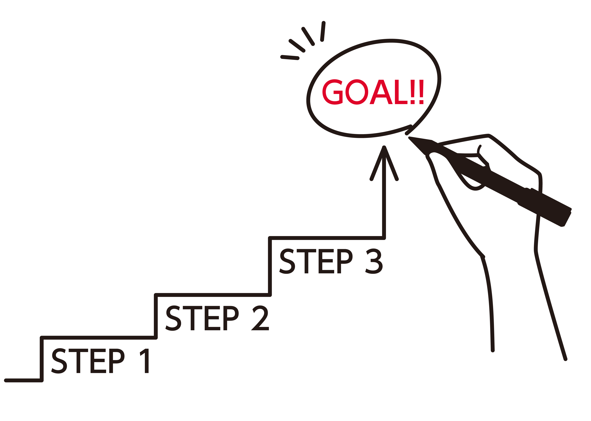
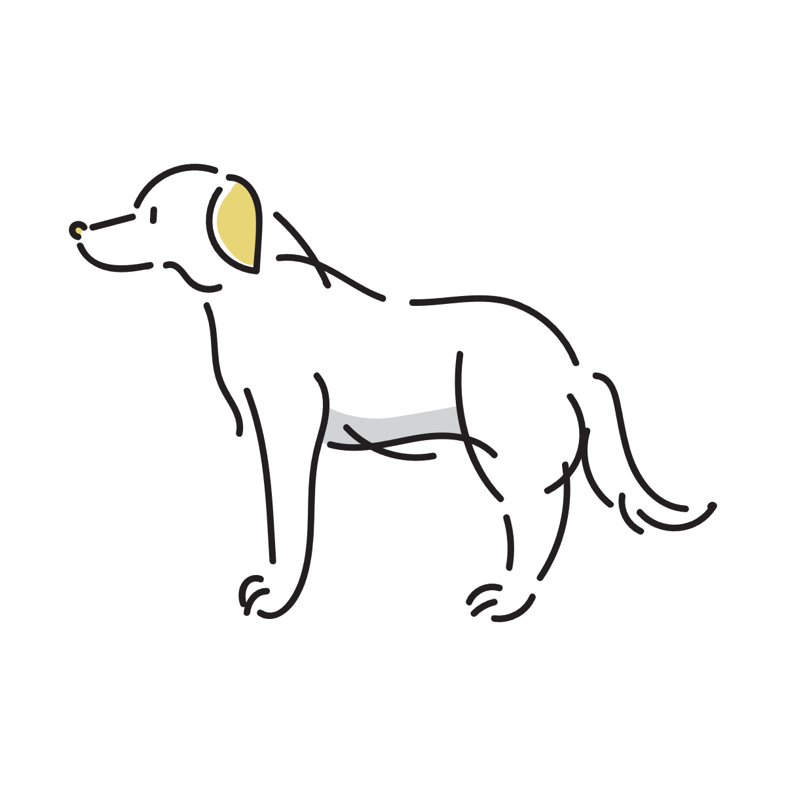

About
かもい けんいち
Born：1987.11.24
Hometown：八王子
Residence：吉祥寺
Hobby：デジタルアート、AI作曲
できること
-
体験をつくる
Web制作、アプリ開発、音楽制作を通して、感情や空気感まで含めた体験づくりに取り組んでいます。
-
強み
探究心をもとに試行錯誤を重ね、納得いくまで作り込みます。細部の調整や表現にもこだわり、完成度を高めることを大切にしています。
- フロントエンド
- HTML・CSS・JavaScript
- バックエンド
- PHP・Java（学習中）
- デザイン
- Photoshop・Illustrator・Figma・Canva
- 開発環境
- VSCode・Eclipse・MAMP・MySQL
- 資格
- Webクリエイター能力認定試験エキスパート
設計思想
感情や空気感を、伝わる体験として設計すること。
それが、私のものづくりの軸です。
見た目の美しさだけでなく、 「安心感」「親しみやすさ」「心に残る」といった感覚まで含めて設計することを大切にしています。
Web、アプリ、音楽など表現方法は違っても、 抽象的な想いや空気感を整理し、形にするというプロセスは共通していると考えています。
これまでの接客経験やIT業務で培った相手視点を活かしながら、 使う人・見る人の気持ちに寄り添った体験づくりを目指しています。
おもなキャリア

-
- コールセンター
-
自動車保険、不動産などのコールセンター業務に従事。
お客様に寄り添ったヒアリング力と、状況に応じた対応力を培いました。
-
- IT業界
-
サーバーヘルプデスクやテスター業務に従事。
トラブル対応力や、状況を整理して考える分析力を培いました。
-
- 職業訓練
-
インタープランITスクールにてWeb制作を学習。
Webクリエイター・プログラミング科を修了。
愛犬ギャラリー

マイペースなスムースコートチワワと、
明るく人懐っこいトイプードルです。